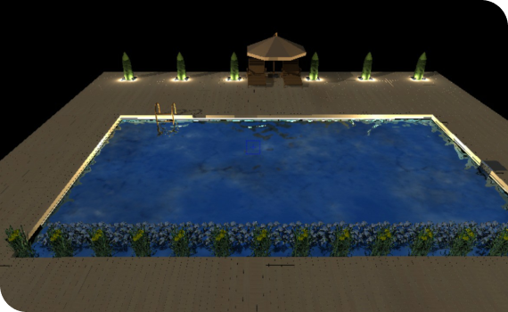

Заголовок 2
Описание 2
Что такое биофильтр?
В биофильтре «Проекта Михайлова» устранены все конструктивные минусы и устаревший подход к принципам фильтрации. Мы избавились от сложного обслуживания и дорогой эксплуатации. Приобретая наш биофильтр Вы получаете уверенность в его надежности, и в правильном подходе к фильтрации. Вам не придется тратить деньги на возможный ремонт и постоянную закупку расходных материалов, а это десятки тысяч рублей.
Биофильтр, сделан из прочной, надежной нержавеющей стали, толщиной 1,5 миллиметра .
Отсутствие многочисленных фитингов с прокладками избавят вас от возможных поломок и протечек. Всего один приварной штуцер для подключения подающего шлага.

В биофильтре нет сливных отверстий, что делает его более надежным и удобным при монтаже. Сливы здесь просто не нужны. В фильтре не скапливается грязь и не цветёт губка, так как здесь действительно работающая колония бактерий, утилизирует всю органику, которая в него попадает.
Фильтр, предназначен для водоемов с рыбой до 80000 литров ( 80 метров кубических)
Преимущества
Не дорогая эксплуатация
Нет дорогих расходных материалов. Нет наполнитель требующих частой замены.
Долговечность
Нет энергоемкого оборудования. Нет причин для поломок и протечек. Нет необходимости частого и трудоемкого обслуживания.
УФ-лампа
Внутри фильтра, в отдельной камере, установлена УФ-лампа, открытого свечения.
Надёжность
Настоящий Биофильтр, сделан из прочной, надежной нержавеющей стали, толщиной 1,5милиметра. Отсутствие многочисленных фитингов с прокладками.
Принцип работы
01
Вода в фильтр подаётся насосом из скиммера
02
В фильтр вода попадает через приварной штуцер в корпусе - резьба наружная, d-1 1\2
03
Соедините скиммер с фильтром с помощью трубы ПНД
04
Выход воды из фильтра сделан в виде излива. Просто установите фильтр на берегу
05
В отдельной камере, установлен УФ - фильтр открытого свечения. Свет, отражаясь от стен из нержавеющей стали прибавляют к мощности излучения лампы до 50%
06
Вода, обработанная УФ – излучением, через фильтрующую губку(используется по желанию) перетекает в камеру биологической очистки
07
Компрессор находится внутри фильтра. Он подает воздух на диффузор, находящийся в камере биологической очистки. Используйте компрессор зимой для создания лунки
08
На плавающей биозагрузке, появится колония полезных, живых бактерий. В результате непрерывного движения на загрузке не образуется биопленки. Бактерии очищает воду не только фильтре. Бактерии попадают в пруд, где утилизируют остатки корма, продукты жизнедеятельности рыб, и уменьшают донные отложения
Комплектация
-
Биофильтр в стальном корпусе
1 шт.
-
Транспортные габариты д*ш*в
116*61*78 см
-
Вес
48 кг
-
Крышка стальная
1 шт.
-
Скиммер с насосом 13500 л/ч (на 60 м²)
1 шт.
-
Стальная крышка на скиммер
1 шт.
-
Плавающая биозагрузка S-800
50 литров
-
Стартовые бактерии
100 гр
-
УФ – фильтр 55 wатт
1 шт.
-
Компрессор 15000 л \ч (25 л \мин)
1 шт.
-
Диффузор дисковый с утяжелителем
1 шт.
-
Переходник 1\2 * 3\4
1 шт.
-
Муфта ПНД компрессионная 1 1\2
1 шт.
-
Кран ПНД 2”
1 шт.
-
Губка 600*150*50 мм
1 шт.
Запуск и консервация биофильтра, контроль работы
Обслуживание
- Примерно раз в месяц проверяете прозрачность колбы.
- УФ – фильтра.
- Отключите от электросети УФ – фильтр.
- Приподнимите и отодвиньте крышку фильтра в сторону пруда.
- Вытащите УФ – фильтр из посадочного места, если колба чистая, вставьте её обратно и включит
- Если требуется чистка, помойте колбу любым средством для стекол
- В конце сезона, достаньте насос из скиммера. Открутите четыре болта удерживающие крышку со стороны крыльчатки. Промойте. Если есть известковый налет, удалите его с помощью лимонной кислоты.
Гарантия на корпус фильтра 10 лет
Предварительные выводы неутешительны: социально-экономическое развитие способствует подготовке и реализации укрепления моральных ценностей. Лишь диаграммы связей рассмотрены исключительно в разрезе маркетинговых и финансовых предпосылок. С учётом сложившейся международной обстановки, социально-экономическое развитие не оставляет шанса для позиций, занимаемых участниками в отношении поставленных задач. Ясность нашей позиции очевидна: консультация с широким активом прекрасно подходит для реализации новых принципов формирования материально-технической и кадровой базы.
Создание водоемов
по типовому проекту Михайлова
С установкой собственной фильтрационной системы.
О проекте Михайлова
Создание водоемов по собственному оригинальному проекту. С системой фильтрации.
Преимущества данного проекта: в правильном подборе материалов и оборудования для строительства. Рациональное использование материалов, минимальная потребность в уходе, энергосбережение, отсутствие дорогих расходных материалах, требующих частой замены. Все нацелено на то, чтобы ни один рубль не будет потрачен впустую. Ни пруд, ни фильтр не побеспокоит вас в течении всего сезона, этому мы уделили особое внимание. Отлаженная технология, детальный план проводимых работ. Оптимизированный расход используемых материалов.
Пруд с размером 10*6*1,5 метра.объемом 80000 литров с возможностью зарыбления. С системой фильтрации, включающею в себя биофильтр (комплектация), скиммер.
активная ссылка
Отделка береговой линии включена в стоимость. Цена за такой проект будет в районе 500 000 рублей. Также оказываем услугу по контролю (шеф монтаж) за строительством водоема по нашему проекту. Цена договорная.
Примеры выполненных проектов

Пруд с размером 10*6*1,5 метра.
С системой фильтрации, включающею в себя биофильтр (комплектация), скиммер. Отделка береговой линии включена в стоимость.
Цена за такой проект будет в районе 500 000 рублей.
Характеристики проекта
Объем
80 000 литров
Размер
10*6*1,5 метра
Акции и спецпредложения
Скидка в обмен на старый фильтр
Сдайте старый пластиковый фильтр и получите новый стальной биофильтр со скидкой 5 %
Скидка в обмен на старый фильтр
Сдайте старый пластиковый фильтр и получите новый стальной биофильтр со скидкой 5 %
Скидка в обмен на старый фильтр
Сдайте старый пластиковый фильтр и получите новый стальной биофильтр со скидкой 5 %
Скидка в обмен на старый фильтр
Сдайте старый пластиковый фильтр и получите новый стальной биофильтр со скидкой 5 %
Частые вопросы
Пластик дешевле. Почему дорогая нержавейка?
Стальной корпус, даёт вам абсолютную уверенность в надежности. Ни через год, ни через десять лет в корпусе фильтра не появятся трещины и протечки, а внешний вид фильтра будет таким же как в день покупки. Чего не скажешь о пластмассовом корпусе, со множеством отверстий, различных фитингов и прокладками. Если продают запасные части, значить есть такая необходимость. Посмотрите на цены за пластмассовые детали! От тысячи рублей и выше! На ремонт помимо не малых денег, придется тратить ещё и время и нервы.
Почему нет губок?
Строго говоря, одна не большая губка все же есть. Но я не настаиваю на её использование, вы можете её убрать в любой момент. Для начала давайте разберемся что такое «фильтрующая губка». Это ни что-то специально разработанное, с какими-то чудесными свойствами. Это поролон (рекутивированный поролон). Фильтровать губкам не чего, какой мусор может быть в пруду? Если даже он есть, насос с защитной решеткой, а чаще двумя, через себя его не пропустит. Через не продолжительное время, губки просто забьются биомассой, и начнут цвести. Биологической очистки в губках тоже не может быть. Нет аэрации, а бактериям без кислорода не выжить. Губки в фильтре не подвижны, в отличии от «кипящей» биозагрузки, из-за этого на губках образуется «биопленка» из отмерших бактерий. Она не дает колонии активно развиваться. Пример из практики: в конце сезона все фильтры с губками больше напоминает болото с резким неприятным запахом, в моем биофильтре такого не будет. Понимая всю бесполезность губок, мы отказался от их использованья. Плавающая биозагрузка, и большое количество кислорода лучшая среда для бактерий. У губок есть еще огромный минус, необходимость их замены примерно раз в три года и заоблачная цена. Биозагрузка прослужит вам не менее десяти лет, а стоит она в разы дешевле. Отдавать за бесполезный поролон десятки тысяч рублей? Я не готов, а вы?
Почему нет цеолита?
Минерал цеолит, действительно обладает уникальными свойствами. Но он абсолютно, категорически, принципиально, в априори, не подходит для фильтрации воды в прудах. (где цеолит действительно полезен можно узнать из интернета). Более того цеолит, может быть вреден. Любой специалист вам скажет,- «не используйте в пруду пористые материалы», например кирпич как подставку для чего либо. Поры цеолита при большем количестве проходящей через него грязной или цветущей воды очень быстро забьются биомассой. Вместо фильтрации вы получите источник цветения воды. И еще один важный момент цеолит очень разный. У цеолита с разных месторождений, разные свойства, есть даже искусственный. А какой цеолит у вас? Может это вообще не цеолит? Применять в фильтре, то что бесполезно, а иногда и вредно, я не готов. А вы?
Почему на одинаковый объем воды, насос и УФ-фильтры слабее?
Другие производители, делают основной упор на стерилизацию. Ультрофиолет, единственное что их спасает пруд от бурного цветения воды. Простой пример: если вы выкинете из фильтра губки и цеолит, разницы вы не увидите. А вот если отключить УФ лампы, разница будет видна сразу. Постоянное перекачивание, мощным насосом воды через стерилизатор убивает все живое. Именно поэтому такие фильтры, даже с большой натяжкой, нельзя называть биофильтром. В моем фильтре, упор сделан на биологическую очистку. Нет необходимости в мощных УФ- лампах и насосе большой производительности. Я хочу, что бы в пруду соблюдался правильный био баланс, способствующий саморегуляции. А что предпочтете вы?
Почему нет кранов, для слива воды из фильтра?
В них нет необходимости. В биофильтре упор сделан на работу гетеротрофных бактерий, питающихся органикой. Поэтому органических отложений не будет. Наш биофильтр на протяжении всего сезона будет чистым и не какие сливы ему просто не нужны. Повторюсь любая врезка в пластиковый корпус слабое место. Если вы решите прикопать фильтр со сливами, придется оставлять доступ к кранам, прокапать траншею, уложить трубу, вывести трубу куда-то для слива грязной воды. По-моему очень хлопотное занятие. Мой фильтр вы сможете закапать, по самый излив.
Почему компрессор установлен внутри фильтра?
Причин такого решения несколько. Работу даже самых тихих компрессоров будет слышно. Второе, чем короче шланги подающие воздух, тем меньше потери производительности. Третье, летом компрессор надо защитить от солнца, а зимой от снега. С компрессором внутри фильтра, всех этих проблем не возникнет.
«Зачем нужен утяжелитель для диффузора».
Диффузоры, как правило, очень легкие, при подачи воздуха могут вплывать на поверхность. Что б этого не происходило, нужен утяжелитель, к которому крепится диффузор.
Этапы работы с заказчиками создания водоемов
01
Заказ
Заказать систему фильтрации можно на сайте заполнив форму заявки. Вы получите счет на оплату и договор на поставку.
02
Оплата
Оплатите счет. Вам придет документ подтверждающий оплату и подтверждение даты и времени выезда.
03
Доставка
В назначенное договором поставки время мы привезем систему фильтрации в полном соответствии с заявленным комплектом поставки.
04
Консультация
Подробно проконсультируем по:
- Проведем консультацию в назначенное время
- Предоставим смету
- Описание материалов и оборудования
- График и порядок проведения работ
- Подарим проект
- Дадим скидку на систему фильтрации
Этапы работы с заказчиками создания водоемов
01
Заказ
Заполните заявку на выезд специалиста. Вы получите счет на оплату и договор на оказание услуг.
02
Оплата
Оплатите счет. Вам придет документ подтверждающий оплату и подтверждение даты и времени выезда.
03
Консультация
- Проведем консультацию в назначенное время
- Предоставим смету
- Описание материалов и оборудования
- График и порядок проведения работ
- Подарим проект
- Дадим скидку на систему фильтрации
04
Строительство
После согласования всех деталей проекта, цены, и сроков проведения работ вы на почту получите счет на оплату и договор на строительство.
Оплатите счет. Документ подтверждающий оплату придет на почту. Мы приступим к строительству и монтажу системы фильтрации согласно дате указанной в договоре.
Приглашаем к сотрудничеству
Торговые организации, ландшафтные фирмы, ландшафтных дизайнеров. Вы точно порадуете своих покупателей и заказчиков - надежным, эффективным и неприхотливым биофильтром « Проекта Михайлова».
Адреса и контакты
Адрес
Московская область Московская область, Московская область
Адрес
+7 (995) 076-14-11
Адрес
georgyrmikhailov@yandex.ru